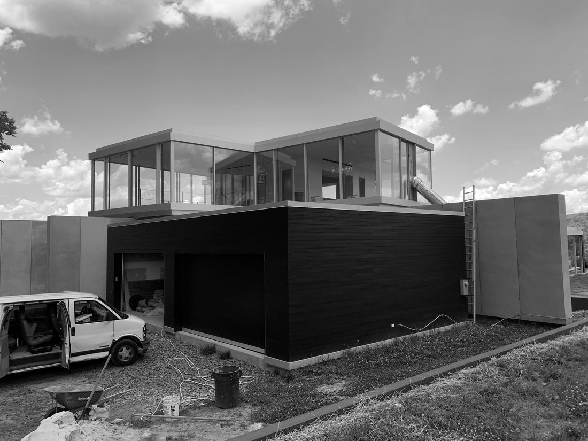

Square One builds the architect-led homes that earn architecture's highest honors. The craft behind them has been thirty-five years in the making.
Steve Howard has been building homes since 1990. In 2000 he joined the custom-home builder Gibson, where he spent eleven years mentored under master builder Jim Gibson — the apprenticeship that shaped the discipline and craft behind his work today.
During those years he began building the early work of architect David Jameson, FAIA — including Jigsaw, built start to finish, which received a 2009 AIA Institute Honor Award, one of the profession's highest national distinctions. He ran construction as project manager and superintendent on Jameson's Blaisdell residence, and a friendship formed on the job site.
That friendship led to PureForm Builders, a partnership with Nancy Jameson. Over the next decade the team built a remarkable run of recognized homes — Tom Kundig's Blue Ridge House (featured in Dwell), and David Jameson's Hull House, Ontario, Liminal House, and Wildcat Mountain among them.

Today, as Square One Development Group, we continue that work at the highest level — Pivoting's sweep of AIA and Home & Design awards with MODE4 Architecture, the Kalorama residence, and a roster of the country's most celebrated architects: Olson Kundig, Allan Greenberg, Dirk Denison, MKCA, and more.
The common thread is simple. For more than two decades we've been the builder who makes ambitious architecture real — backed by thirty-five years of craft — quietly, precisely, and to a standard that earns the work its recognition.
Every design award belongs to the architect. Our credential is having built the recognized work.
We've built for public figures, private families, and institutions whose names we don't share. Discretion is part of the service — and part of why the region's leading architects trust us with their most important work.
Precision in the details. Collaboration with you and your architect from the first conversation. And a respect for craft that shows in everything from board-formed concrete to a custom pivot door. We don't simply construct a home; we make a place built to be lived in, appreciated, and passed down.